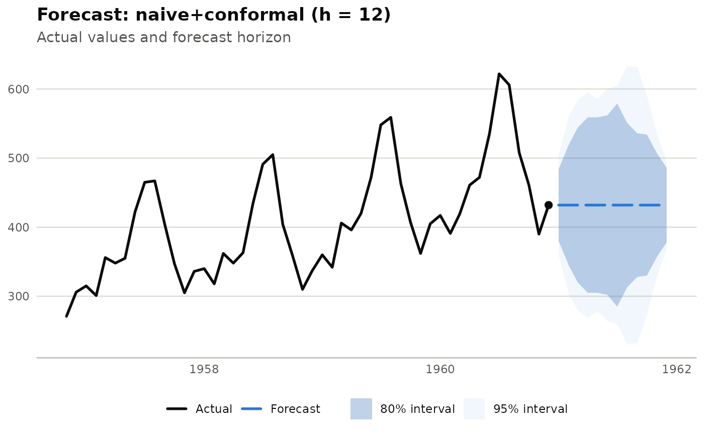

Calibrates model-agnostic prediction intervals using split-conformal
prediction. The model is refit on a series of walk-forward calibration
folds (same fold structure as milt_backtest()); the resulting
per-horizon-step absolute forecast errors give empirical quantiles that
are applied as a point ± margin interval around the final forecast —
regardless of whether the underlying model natively produces prediction
intervals.
Arguments
- model
An unfitted
MiltModel(created withmilt_model()). It is cloned and refit from scratch on each calibration fold, then refit once more on the fullseriesfor the final forecast; the original object passed in is not modified.- series
A
MiltSeriesused both for calibration folds and as the training data for the final forecast.- horizon
Positive integer. Forecast horizon.
- level
Numeric vector of confidence levels, e.g.
c(80, 95).- initial_window
Positive integer. Size of the first calibration training window. Defaults to
max(floor(n * 0.5), horizon + 1L).- stride
Positive integer. Steps between calibration folds. Default
1L.- method
Character scalar:
"expanding"or"sliding"calibration window, same semantics asmilt_backtest().- window
Positive integer. Only used when
method = "sliding".
Value
A MiltForecast object whose prediction intervals are
conformal-calibrated rather than model-native. The point forecast is
unchanged from the underlying model.
Examples
# \donttest{
s <- milt_series(AirPassengers)
fct <- milt_conformal(milt_model("naive"), s, horizon = 12)
#> Calibrating conformal intervals (61 folds): naive, h=12
plot(fct)

# }